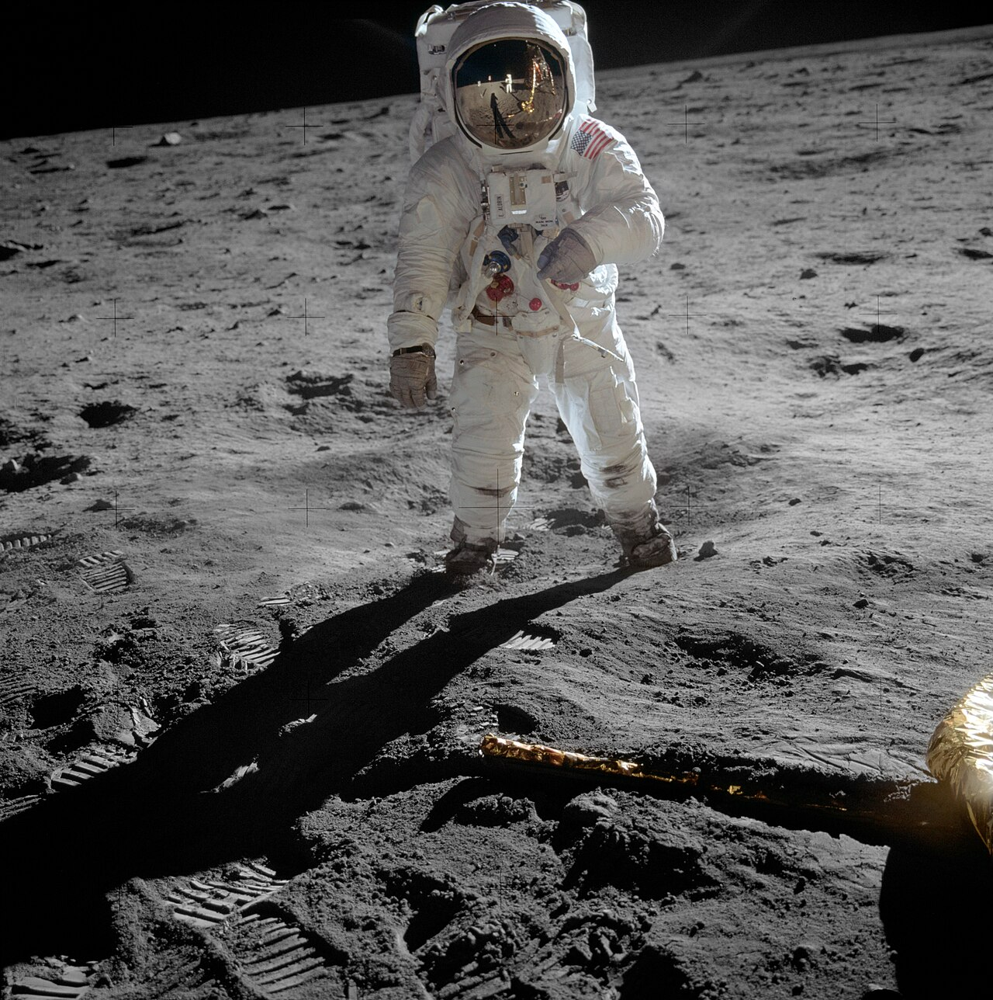
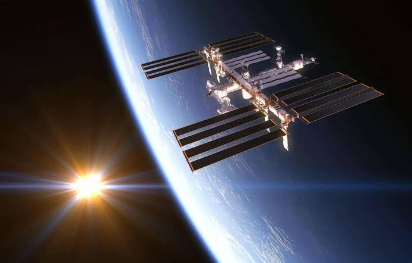
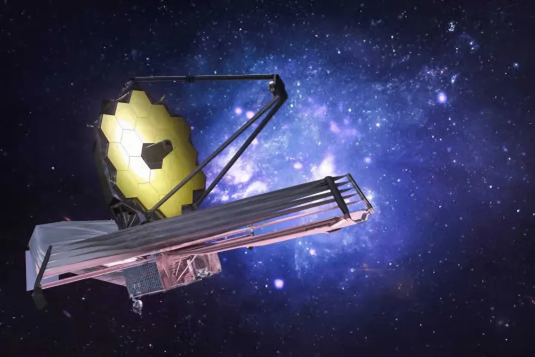
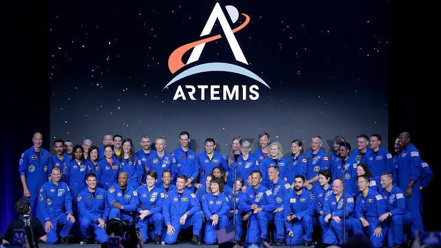

Missões Espaciais

Missão Apollo 11
A missão Apollo 11 foi realizada pela NASA em julho de 1969 e marcou um dos maiores feitos da história da exploração espacial. A nave levou os astronautas Neil Armstrong, Buzz Aldrin e Michael Collins até a Lua. Enquanto Collins permaneceu em órbita lunar, Armstrong e Aldrin desceram à superfície no módulo lunar Eagle. Em 20 de julho de 1969, Armstrong tornou-se o primeiro ser humano a caminhar na Lua, seguido por Aldrin. Durante a missão, os astronautas coletaram amostras de rochas, instalaram equipamentos científicos e tiraram fotografias. O sucesso da Apollo 11 demonstrou a capacidade tecnológica da humanidade e abriu caminho para novas pesquisas sobre a Lua e o espaço.

Estação Espacial Internacional (ISS)
Estação Espacial Internacional (ISS) A Estação Espacial Internacional, conhecida como ISS, é um laboratório científico que orbita a Terra a aproximadamente 400 quilômetros de altitude. Ela é resultado da colaboração entre diferentes agências espaciais e permite a realização de experimentos em microgravidade. Astronautas vivem e trabalham na estação durante períodos prolongados, estudando os efeitos do espaço sobre o corpo humano, o crescimento de plantas, novos materiais e diferentes processos físicos. Essas pesquisas contribuem para avanços científicos e tecnológicos, além de ajudar a preparar futuras viagens espaciais de longa duração. A ISS também é um exemplo importante de cooperação internacional, reunindo profissionais de diversos países em projetos de pesquisa e exploração espacial.

Telescópio Espacial James Webb
O Telescópio Espacial James Webb foi lançado em 25 de dezembro de 2021 e começou suas operações científicas em 2022. Desenvolvido por meio de uma parceria entre a NASA, a Agência Espacial Europeia e a Agência Espacial Canadense, ele observa o Universo principalmente na faixa do infravermelho. Essa tecnologia permite estudar galáxias muito distantes, estrelas em formação, nuvens de poeira cósmica e atmosferas de planetas que orbitam outras estrelas, chamados exoplanetas. Seu enorme espelho principal, com aproximadamente 6,5 metros de diâmetro, permite captar luz extremamente fraca de objetos distantes. As observações do James Webb ajudam os cientistas a investigar como as primeiras galáxias se formaram e como os sistemas planetários evoluem ao longo do tempo.

Missão a Marte
As missões a Marte têm como objetivo compreender melhor o planeta vermelho, investigar sua história geológica e descobrir se ele já apresentou condições favoráveis à vida. Entre as principais missões está a Perseverance, um robô explorador da NASA que pousou em Marte em fevereiro de 2021. Ele analisa rochas, estuda o clima e coleta amostras que poderão ser examinadas em futuras missões. O robô também transportou o pequeno helicóptero Ingenuity, que demonstrou a possibilidade de realizar voos controlados em outro planeta. Essas pesquisas ajudam os cientistas a entender se Marte já teve rios, lagos ou outros ambientes que poderiam ter sustentado vida microscópica no passado.

Programa Artemis
O programa Artemis é uma iniciativa da NASA, realizada com parceiros internacionais e comerciais, que busca ampliar a exploração humana da Lua. Seu objetivo é levar astronautas novamente à superfície lunar, desenvolver novas tecnologias e estabelecer condições para missões mais longas no espaço. O programa utiliza sistemas como o foguete Space Launch System (SLS) e a nave Orion, projetados para transportar astronautas em viagens além da órbita terrestre. As missões também investigam regiões da Lua que podem conter gelo de água, um recurso que poderá ser importante para futuras atividades espaciais. Além de aprofundar o conhecimento científico sobre nosso satélite natural, o Artemis pretende contribuir para o desenvolvimento de tecnologias e experiências necessárias para futuras missões tripuladas a Marte.